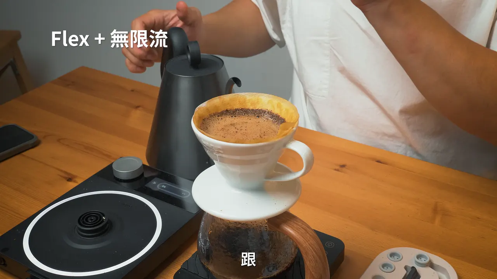
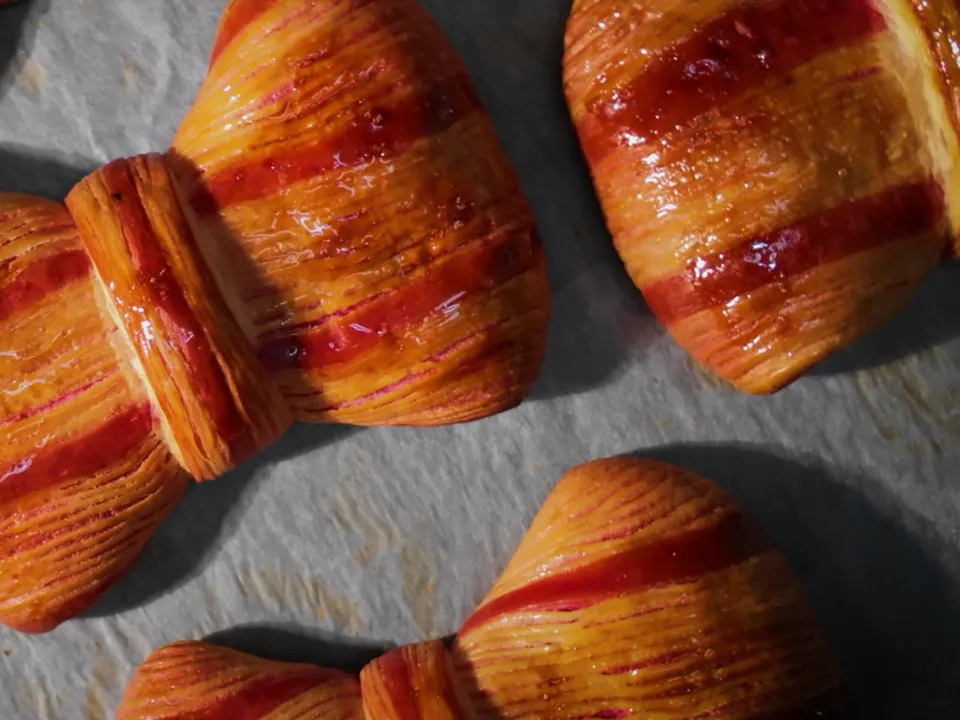
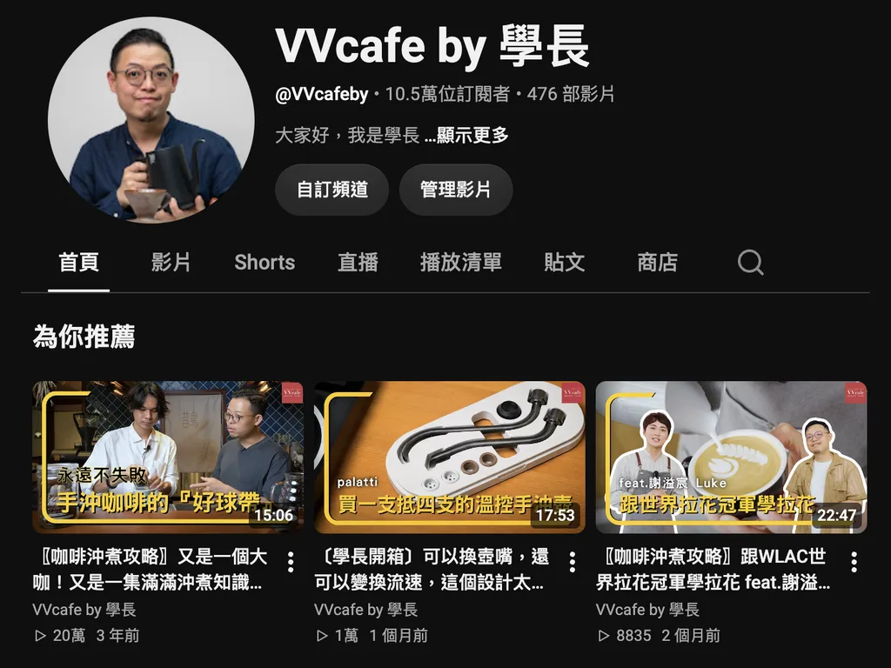

讓好東西，被好好看見。Let good things be seen.
我是謝岱霖，台北的品牌行銷人。
做行銷素材、經營品牌頻道，從企劃、拍攝到剪輯一手完成。I’m Ray Hsieh, a brand marketer in Taipei.
I make marketing content and grow brand channels, from the plan and the shoot to the final cut.
三種影片，三種節奏。Three kinds of film, three rhythms.
產品要慢，課程要清楚，短影音要快。Products need time, courses need clarity, shorts need speed.

從企劃到成片，一個人完成。From plan to final cut, one person.
不用在好幾個人之間傳話。需要更多版本時，再用 AI 工具把一支片變成好幾支。No messages lost between several people. When you need more versions, AI tools turn one film into several.




合作過的品牌Brands I’ve worked with
從咖啡器材、線上課程平台，到企業管理顧問與阿卡貝拉樂團。From coffee gear and online course platforms to a management consultancy and an a cappella group.
- 火種計畫Wonder Fire
- VVcafeVVcafe
- PressPlayPressPlay
- 商明國際Biz Civilization
- AD CafeAD Cafe
- 尋人啟事The Wanted
我的相關經驗My relevant experience
廣告素材Ad creative
素材從企劃做到成片Creative, from plan to final cut
產品影片當過 Meta 廣告素材；在 VVcafe 規劃電商商品影片，帶動平台流量 +15%。My product videos ran as Meta ad creative; product videos I planned for VVcafe lifted marketplace traffic 15%.
廣告投放Paid ads
自己在 Meta 投放過Meta ads, run myself
在 VVcafe 用 Meta 廣告管理員，自己設定受眾、預算與目標，投放咖啡器材廣告，素材也是自己做的。At VVcafe I ran coffee-gear ads in Meta Ads Manager, setting audiences, budgets and objectives myself, with creative I made.
品牌頻道Brand channel
頻道從零做到 10 萬+ 訂閱A channel from zero to 100k+
2018 年創立 VVcafe by 學長 YouTube 頻道，企劃、腳本、拍攝、剪輯一手包辦；在 HIROIA 策劃展覽互動活動，FB 粉絲 +22%。In 2018 I started the VVcafe YouTube channel and did the planning, scripts, shooting and editing; at HIROIA an exhibition campaign grew Facebook followers 22%.
短影音Short-form
一支短片，快速做出多個版本One short, many versions
替品牌與線上課程做過大量短影音；在商明國際從零建立 AI 短影音製作流程，方便測試不同的素材。Short videos for brands and online courses; at Biz Civilization I built an AI short-video workflow from scratch, so different creatives are easy to test.
代表作品Selected work
點開就能看。Open any of them to watch.

品牌宣傳片Brand film
GOR’ COFFEEGOR’ COFFEE
企劃・腳本・拍攝・剪輯・調色Planning, script, shooting, editing, colour
線上課程製作Online course production
火種計畫 Excel 課程Wonder Fire’s Excel course
宣傳片企劃・拍攝・剪輯Trailer: planning, shooting, editing

頻道經營Channel management
VVcafe 從零到 10 萬+ 訂閱VVcafe, from zero to 100k+
企劃・腳本・拍攝・剪輯Planning, scripts, shooting, editing

短影音製作Short-form video
商明國際 OGSM 一頁紙Biz Civilization, OGSM on one page
剪輯・動態圖像Editing, motion graphics